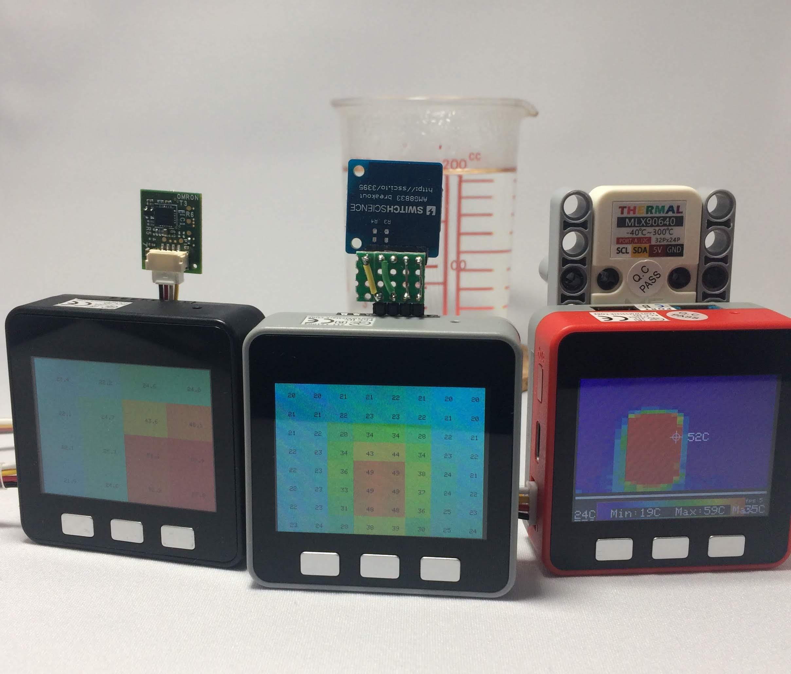

2次元の温度分布が調べられるセンサーがあります。非接触温度センサー、赤外線アレイセンサー、サーマルカメラなどと呼ばれますが、少し離れたところにあるものの温度が調べられるセンサーです。
「AmbientでIoTをはじめよう」、第18回は、M5Stackにサーマルカメラをつなぎ、温度分布をLCDに表示してみます。

今回は次の3種類のセンサーを使います。
写真は左からOMRON MEMS非接触温度センサD6T-44L-06、Conta™ サーモグラフィー AMG8833搭載、M5Stack用ミニサーマルカメラユニット (MLX90640搭載)です。
三つのセンサーの仕様は次のようになっています。
| D6T-44L-06 | AMG8833 | MLX90640 | |
|---|---|---|---|
| 温度測定範囲 | 5〜50℃ | 0〜80℃ | -40〜300℃ |
| 精度 | ±1.5℃ | ±2.5℃ | ±1.5℃ |
| ピクセル数(横ｘ縦) | 4 x 4 | 8 x 8 | 32 x 24 |
| 視野角(横ｘ縦) | 45.7° x 44.2° | 60° x 60° | 110° x 75° |
| 電源電圧 | 4.5〜5.5V | 3.3V | 3.3V |
| インタフェース | I2C | I2C | I2C |
| I2Cアドレス | 0x0a | 0x68 or 0x69 | 0x33 |
物体は温度に応じて放射エネルギーを放出しています。これをサーモパイルと呼ばれる素子で測定することで、離れた物体の温度が測定できます。サーマルカメラはこのサーモパイル素子をアレイ状に並べることで二次元の温度分布を測ります。
「OMRON MEMS非接触温度センサD6T-44L-06」はオムロンが開発した非接触温度センサーです。縦横4x4のメッシュで温度が測定でき、精度は±1.5℃です。マイコンとはI2Cインタフェースで通信します。
コネクタはJHSのGHシリーズ SM04B-GHS-TBですが、このコネクタをGroveコネクタに変換する基板「4×4非接触温度センサD6T 変換基板」がでているので、それも合わせて使います。変換基板の中でI2CのSDAとSCLがプルアップされているので、外部のプルアップ抵抗は必要ありません。
| 部品 | 個数 |
|---|---|
| OMRON MEMS非接触温度センサD6T-44L-06 | 1個 |
| 4×4非接触温度センサD6T 変換基板 | 1個 |
接続はM5StackのGroveポート(I2C)に接続するだけです。M5Stack BasicとGrayはI2CのGroveポートが一つだけなのでそこにつなぎます。M5Stack FireとM5GOにはI2C用とGPIO用、UART用の三つのGroveポートがあります。本体側についているのがI2C用なので、そこにつなぎます。ボトム側についているGroveポートはGPIO用とUART用なので、間違えないようにしましょう。
ArduinoでD6T-44L-06を使うためのライブラリーが用意されています。
このページにいき、ページ右上の「Clone or download」の「Download ZIP」をクリックして、ライブラリーのZIPファイルをダウンロードします。
Arduino IDEを立ち上げ、「スケッチ」メニューの「ライブラリをインクルード」→「.ZIP形式のライブラリをインストール…」をクリックし、ダウンロードしたZIPファイルを選択してインストールします。
このライブラリーはArduino UNOなどで動くように作られています。D6T-44L-06はマイコンとI2Cで通信し、35バイトのデーターを返しますが、Arduino UNOのWireライブラリーは32バイトのデーターしか扱えません。そこで、D6T-44L-06ライブラリーではWireを拡張したWireExtというライブラリーを使っています。ところが、WireExtライブラリーがESP32に対応していないため、そのままビルドするとエラーになってしまいます。ESP32のWireライブラリーは128バイトまで扱えるので、WireExtは必要ありません。
対策として、インストールしたD6T-44L-06ライブラリーのWireExt.cppを修正します。インストールしたライブラリーはArduinoのスケッチフォルダーのlibrariesの下に置かれます。スケッチフォルダの場所はArduino IDEの「ファイル」メニューの「環境設定」で確認できますが、 Windowsの場合、標準では「C:\Users<アカウント名>\Documents\Arduino」です。libraries\d6t-grove-arduino-master\src\WireExt.cppを編集して、全体を次の2行で挟みます。
#ifdef ARDUINO_ARCH_AVR
元のWireExt.cpp
#endif
あるいはWireExt.cppとWireExt.hを削除しても構いません。
「ファイル」メニューの「スケッチ例」→「Omron D6T-Grove-Arduino」の「sample」がサンプルプログラムなので、ビルドして実行します。プログラムのシリアルの速度設定が9600bpsになっているので、シリアルモニタの速度もそれに合わせると、次のような数字が出力されます。
これが4x4のエリアの温度を表しています。
ライブラリの使い方は、最初にインクルードファイルOmronD6T.hをインクルードし、OmronD6Tのオブジェクトを作ります。
#include "OmronD6T.h"
OmronD6T sensor;
このオブジェクトのscanTempというメソッドを呼ぶと、温度が測定され、4x4の温度データーがsensor.temp[x][y]という配列にセットされます。
このデーターをM5StackのLCDに色で表示してみます。
M5StackのLCDは縦横が320x240ピクセルなので、D6T-44L-06の4x4の領域の温度をLCDの80x60の領域の色で表現します。D6T-44L-06は縦がx、横がyですが、M5StackのLCDでは縦がy、横がxで、D6T-44L-06と縦横が逆なので注意が必要です。
数値を色で表すには青から緑、赤と変化する色相を使います。これは赤、緑、青を次のように混ぜることで得られます。
各色の変化を再現するには直線で近似する方法、三角関数を使う方法などがありますが、「サーモグラフィ風の色変化をシグモイド関数で再現する」を参考に、シグモイド関数を使って実現しました。
0.0から1.0の値を青から赤の色に変換するプログラムは次のようになります。
M5Stackは色を16ビットで扱うので、heat()関数では最後にRGBの値を16ビットに変換しています。
D6T-44L-06の4x4の領域の温度をM5StackのLCDに表示するプログラムは次のようになります。LCDの各領域の中心に温度の数字も表示しています。
動かしてみるとこんな画像が得られます。
次は「Conta™ サーモグラフィー AMG8833搭載」を使います。このモジュールはPanasonicの非接触温度センサー「AMG8833」を搭載しています。AMG8833は8x8のメッシュで温度が測定でき、精度は±2.5℃です。I2Cで通信します。AMG8833のデフォルトのI2Cアドレスは0x68ですが、M5Stack Grayなどの9軸IMU(慣性計測装置)センサーMPU9250のI2Cアドレスとぶつかっています。M5Stack BasicにはMPU9250が搭載されていないので問題ないのですが、Gray、M5GO、Fireを使う時はサーモグラフィーモジュールの基板表面のソルダージャンパー「SJ1」のセンターパッドを「H」側と接続してアドレスを「0x69」に変更します。
このモジュールにはプルアップ抵抗は搭載されていないので、プログラムでプルアップします。
I2C接続なので、サーモグラフィーモジュールのSDAをM5Stackの21番ピンに、SCLを22番ピンに接続します。
スイッチサイエンスのサンプルプログラムを参考に、AMG8833の初期化をおこないます。
フレームレートを10FPSに、割り込みを無効に、移動平均出力を有効に設定しています。
I2C通信は次のようにしました。
AMG8833は8x8ピクセルで1ピクセル2バイトのデーターなので、全部で128バイトになります。ESP32のI2Cは128バイトまで読めるので、1回の通信ですませています。
8x8の温度をM5StackのLCDに色で表示する部分はD6T-44L-06のものとほぼ同じです。
動かしてみるとこんな画像が得られます。
最後にM5Stack用ミニサーマルカメラユニットを使ってみます。このサーマルカメラユニットはMLX90640という非接触温度センサを搭載しています。MLX90640は32x24ピクセルのメッシュで温度が測定でき、精度はベストケースで±1.5℃と書かれています。マイコンとはI2Cで通信します。
サーマルカメラユニットにはGroveコネクタがついていて、GroveケーブルでM5Stackと接続できます。ユニット内でI2CのSDAとSCLがプルアップされているので、外部のプルアップ抵抗は必要ありません。
サンプルプログラムがあるので、それを動かしてみましょう。Arduino IDEの「ファイル」メニュー→「スケッチ例」→「M5Stack」→「Unit」→「MLX90640」を開きます。
サンプルプログラムに含まれるMLX90640_I2C_Driver.cppにはバグがあり、そのままビルドすると「No ack read」というエラーが出続けます。Githubに公開されているサンプルプログラムは修正済みですが、ライブラリマネージャでインストールしたM5Stackライブラリのコード(バージョン0.2.5)はまだ修正されていないので、次のように修正します。
IDEの「MLX90640_I2C_Driver.cpp」タブを選択し、46行目のWire.endTransmission()の戻り値を「7」と比較していたら、それを「0」に変更します。
if (Wire.endTransmission(false) != 7) //Do not release bus
↓変更する
if (Wire.endTransmission(false) != 0) //Do not release bus
このサンプルプログラムは32x24ピクセルの中心の温度をLCDに表示するのですが、ここもバグがあるようで、画面の右端のピクセルの温度を表示しています。「MLX90640.ino」の372行目を次のように修正します。
spot_v = pixels[768/2];
↓変更する
spot_v = pixels[768/2-16];
さらに416行目から418行目がコメントアウトされているのをコメントを外し、逆に419行目から421行目をコメントアウトします。
//M5.Lcd.drawCircle(160, 100, 6, TFT_WHITE); // update center spot icon
//M5.Lcd.drawLine(160, 90, 160, 110, TFT_WHITE); // vertical line
//M5.Lcd.drawLine(150, 100, 170, 100, TFT_WHITE); // horizontal line
M5.Lcd.drawCircle(160, 120, 6, TFT_WHITE); // update center spot icon
M5.Lcd.drawLine(160, 110, 160, 130, TFT_WHITE); // vertical line
M5.Lcd.drawLine(150, 120, 170, 120, TFT_WHITE); // horizontal line
このプログラムはサーマルカメラをLCD画面と同じ向きにした時、つまり自撮りした時に正しい向きで温度分布を表示するようになっています。カメラをLCD画面と逆向きにした時に正しい向きで表示する場合は「MLX90640.ino」の50行目のreverseScreenがfalseになっているのをtrueに変更します。
bool reverseScreen = false;
//bool reverseScreen = true;
↓変更する
//bool reverseScreen = false;
bool reverseScreen = true;
今回はM5Stackに3種類のサーマルカメラをつないで、温度分布をLCDに表示してみました。解像度は4x4、8x8、32x24と違いますが、2次元の温度分布が調べられるのは同じです。画像にして見ている分には高解像度のものが面白いですが、実際にデーターを使って何かの制御をする時には、高解像度のものがいいとは限りません。用途に応じた解像度のものを選ぶのがよさそうです。
この記事はアンビエントデーターの下島が担当しました。